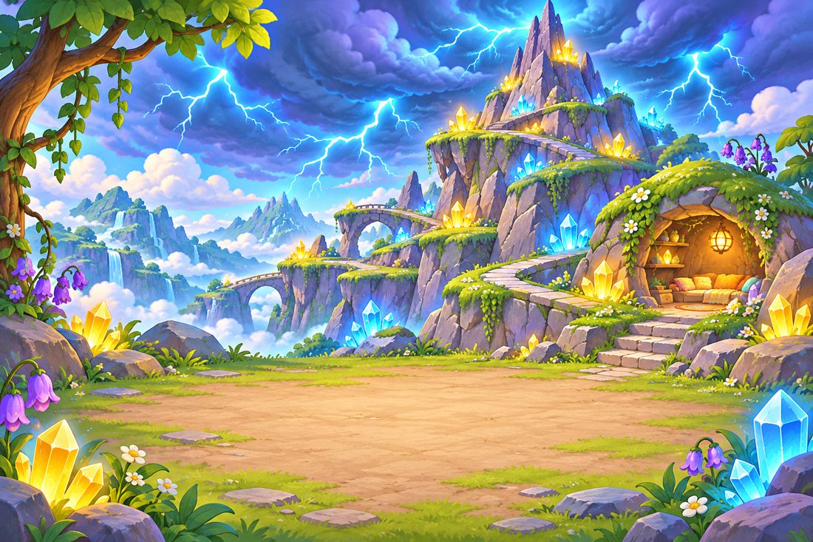

Electric
Electric Light
LightTap a stage to read its story.
Aurykit is a compact golden rabbit whose fur crackles with static whenever it hops, leaving tiny scorched footprints on the crystal mine floors. Its amber-orange eyes see clearly in the mine's pitch-dark tunnels, lit from within by a faint internal glow. Aurykit thumps its hind legs when it senses an electric charge building in a crystal vein - miners have learned to count its thumps to predict when a crystal will crack and flash. It bounces in tight excited circles every time it learns a new sound.
Field note: Aurykit thumps exactly once per second when a crystal charge is building - miners count the thumps to stay safe.

Storm Spire. Aurykit hopped far from its burrow family. Help Aurykit find them again!
Watched over by the Guardian Riku.
Personality: Energetic
Signature move: Spark Hop
What helps rabbits hear danger?
Share a Bond Food that matches its types to become friends. Aurykit loves:
A Bond Food is not a trick. It joins your spirit with the Kimuro's spirit, and only when it chooses you.
Mazes, puzzles, cards and a Bond Mark medal in the printable Storm Spire adventure.
Print the adventure